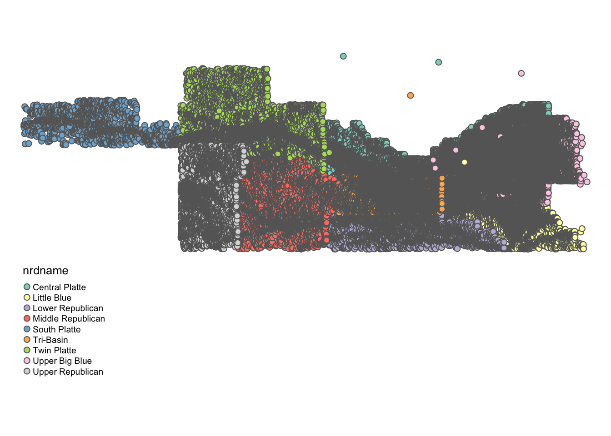

Chapter 2 Handle vector data using the sf package
Before you start
In this chapter we learn how to use the sf package to handle and operate on spatial datasets. The sf package uses the class of simple feature (sf)36 for spatial objects in R. We first learn how sf objects store and represent spatial datasets. We then move on to the following practical topics:
- read and write a shapefile and spatial data in other formats (and why you might not want to use the shapefile system any more, but use other alternative formats)
- project and reproject spatial objects
- convert
sfobjects intospobjective, vice versa - confirm that
dplyrworks well withsfobjects - implement non-interactive (does not involve two
sfobjects) geometric operations onsfobjects- create buffers
- find the area of polygons
- find the centroid of polygons
- calculate the length of lines
sf or sp?
The sf package was designed to replace the sp package, which has been one of the most popular and powerful spatial packages in R for more than a decade. It has been about four years since sf package was first registered on CRAN. A couple of years back, many other spatial packages did not have support for the package yet. In this blog post that asked the question of whether one should learn sp of sf, the author said:
"That’s a tough question. If you have time, I would say, learn to use both. sf is pretty new, so a lot of packages that depend on spatial classes still rely on sp. So you will need to know sp if you want to do any integration with many other packages, including raster (as of March 2018).
However, in the future we should see an increasing shift toward the sf package and greater use of sf classes in other packages. I also think that sf is easier to learn to use than sp."
The future has come, and it’s not a tough question anymore. I cannot think of any major spatial packages that do not support sf package, and sf has largely becomes the standard for handling vector data in \(R\). Thus, this lecture note does not cover how to use sp at all.37
sf has several advantages over sp package (Pebesma 2018).38 First, it cut off the tie that sp had with ESRI shapefile system, which has somewhat loose way of representing spatial data. Instead, it uses simple feature access, which is an open standard supported by Open Geospatial Consortium (OGC). Another important benefit is its compatibility with the tidyverse package, which include widely popular packages like ggplot2 and dplyr. Consequently, map-making with ggplot() and data wrangling with a family of dplyr functions come very natural to many \(R\) users. sp objects have different slots for spatial information and attributes data, and they are not amenable to dplyr way of data transformation.
2.1 Spatial Data Structure
Here, we learn how the sf package stores spatial data, along with the definition of three key sf object classes: simple feature geometry (sfg), simple feature geometry list-column (sfc), and simple feature (sf). The sf package provides a simply way of storing geographic information and the attributes of the geographic units in a single dataset. This special type of dataset is called simple feature (sf). It is best to take a look at an example to see how this is achieved. We use North Carolina county boundaries with county attributes (Figure 2.1).
#--- a dataset that comes with the sf package ---#
nc <- st_read(system.file("shape/nc.shp", package="sf")) Reading layer `nc' from data source `/Library/Frameworks/R.framework/Versions/4.0/Resources/library/sf/shape/nc.shp' using driver `ESRI Shapefile'
Simple feature collection with 100 features and 14 fields
geometry type: MULTIPOLYGON
dimension: XY
bbox: xmin: -84.32385 ymin: 33.88199 xmax: -75.45698 ymax: 36.58965
CRS: 4267
Figure 2.1: North Carolina county boundary
As you can see below, this dataset is of class sf (and data.frame at the same time).
[1] "sf" "data.frame"Now, let’s take a look inside of nc.
Simple feature collection with 6 features and 14 fields
geometry type: MULTIPOLYGON
dimension: XY
bbox: xmin: -81.74107 ymin: 36.07282 xmax: -75.77316 ymax: 36.58965
CRS: 4267
AREA PERIMETER CNTY_ CNTY_ID NAME FIPS FIPSNO CRESS_ID BIR74 SID74
1 0.114 1.442 1825 1825 Ashe 37009 37009 5 1091 1
2 0.061 1.231 1827 1827 Alleghany 37005 37005 3 487 0
3 0.143 1.630 1828 1828 Surry 37171 37171 86 3188 5
4 0.070 2.968 1831 1831 Currituck 37053 37053 27 508 1
5 0.153 2.206 1832 1832 Northampton 37131 37131 66 1421 9
6 0.097 1.670 1833 1833 Hertford 37091 37091 46 1452 7
NWBIR74 BIR79 SID79 NWBIR79 geometry
1 10 1364 0 19 MULTIPOLYGON (((-81.47276 3...
2 10 542 3 12 MULTIPOLYGON (((-81.23989 3...
3 208 3616 6 260 MULTIPOLYGON (((-80.45634 3...
4 123 830 2 145 MULTIPOLYGON (((-76.00897 3...
5 1066 1606 3 1197 MULTIPOLYGON (((-77.21767 3...
6 954 1838 5 1237 MULTIPOLYGON (((-76.74506 3...Just like a regular data.frame, you see a number of variables (attributes) except that you have a variable called geometry at the end. Each row represents a single geographic unit (here, county). Ashe County (1st row) has area of \(0.114\), FIPS code of \(37009\), and so on. And the entry in geometry column at the first row represents the geographic information of Ashe County. An entry in the geometry column is a simple feature geometry (sfg), which is an \(R\) object that represents the geographic information of a single geometric feature (county in this example). There are different types of sfgs (POINT, LINESTRING, POLYGON, MULTIPOLYGON, etc). Here, sfgs representing counties in NC are of type MULTIPOLYGON. Let’s take a look inside the sfg for Ashe County using st_geometry().
[[1]]
[,1] [,2]
[1,] -81.47276 36.23436
[2,] -81.54084 36.27251
[3,] -81.56198 36.27359
[4,] -81.63306 36.34069
[5,] -81.74107 36.39178
[6,] -81.69828 36.47178
[7,] -81.70280 36.51934
[8,] -81.67000 36.58965
[9,] -81.34530 36.57286
[10,] -81.34754 36.53791
[11,] -81.32478 36.51368
[12,] -81.31332 36.48070
[13,] -81.26624 36.43721
[14,] -81.26284 36.40504
[15,] -81.24069 36.37942
[16,] -81.23989 36.36536
[17,] -81.26424 36.35241
[18,] -81.32899 36.36350
[19,] -81.36137 36.35316
[20,] -81.36569 36.33905
[21,] -81.35413 36.29972
[22,] -81.36745 36.27870
[23,] -81.40639 36.28505
[24,] -81.41233 36.26729
[25,] -81.43104 36.26072
[26,] -81.45289 36.23959
[27,] -81.47276 36.23436As you can see, the sfg consists of a number of points (pairs of two numbers). Connecting the points in the order they are stored delineate the Ashe County boundary.

We will take a closer look at different types of sfg in the next section.
Finally, the geometry variable is a list of individual sfgs, called simple feature geometry list-column (sfc).
Simple feature collection with 100 features and 0 fields
geometry type: MULTIPOLYGON
dimension: XY
bbox: xmin: -84.32385 ymin: 33.88199 xmax: -75.45698 ymax: 36.58965
CRS: 4267
First 10 features:
geometry
1 MULTIPOLYGON (((-81.47276 3...
2 MULTIPOLYGON (((-81.23989 3...
3 MULTIPOLYGON (((-80.45634 3...
4 MULTIPOLYGON (((-76.00897 3...
5 MULTIPOLYGON (((-77.21767 3...
6 MULTIPOLYGON (((-76.74506 3...
7 MULTIPOLYGON (((-76.00897 3...
8 MULTIPOLYGON (((-76.56251 3...
9 MULTIPOLYGON (((-78.30876 3...
10 MULTIPOLYGON (((-80.02567 3...Elements of a geometry list-column are allowed to be different in nature from other elements39. In the nc data, all the elements (sfgs) in geometry column are MULTIPOLYGON. However, you could also have LINESTRING or POINT objects mixed with MULTIPOLYGONS objects in a single sf object if you would like.
2.2 Simple feature geometry, simple feature geometry list-column, and simple feature
Here, we learn how different types of sfg are constructed. We also learn how to create sfc and sf from sfg from scratch.40
2.2.1 Simple feature geometry (sfg)
The sf package uses a class of sfg (simple feature geometry) objects to represent a geometry of a single geometric feature (say, a city as a point, a river as a line, county and school district as polygons). There are different types of sfgs. Here are some example feature types that we commonly encounter as an economist41:
POINT: area-less feature that represents a point (e.g., well, city, farmland)LINESTRING: (e.g., a tributary of a river)MULTILINESTRING: (e.g., river with more than one tributaries)POLYGON: geometry with a positive area (e.g., county, state, country)MULTIPOLYGON: collection of polygons to represent a single object (e.g., countries with islands: U.S., Japan)
POINT is the simplest geometry type, and is represented by a vector of two42 numeric values. An example below shows how a POINT feature can be made from scratch43:
The st_point() function creates a POINT object when supplied with a vector of two numeric values. If you check the class of the newly created object,
[1] "XY" "POINT" "sfg" You can see that it’s indeed a POINT object. But, it’s also an sfg object. So, a_point is an sfg object of type POINT.
A LINESTRING objects are represented by a sequence of points:
#--- collection of points in a matrix form ---#
s1 <- rbind(c(2,3),c(3,4),c(3,5),c(1,5))
#--- see what s1 looks like ---#
s1 [,1] [,2]
[1,] 2 3
[2,] 3 4
[3,] 3 5
[4,] 1 5#--- create a "LINESTRING" ---#
a_linestring <- st_linestring(s1)
#--- check the class ---#
class(a_linestring)[1] "XY" "LINESTRING" "sfg" s1 is a matrix where each row represents a point. By applying st_linestring() function to s1, you create a LINESTRING object. Let’s see what the line looks like.

As you can see, each pair of consecutive points in the matrix are connected by a straight line to form a line.
A POLYGON is very similar to LINESTRING in the manner it is represented.
#--- collection of points in a matrix form ---#
p1 <- rbind(c(0,0), c(3,0), c(3,2), c(2,5), c(1,3), c(0,0))
#--- see what s1 looks like ---#
p1 [,1] [,2]
[1,] 0 0
[2,] 3 0
[3,] 3 2
[4,] 2 5
[5,] 1 3
[6,] 0 0 #--- create a "LINESTRING" ---#
a_polygon <- st_polygon(list(p1))
#--- check the class ---#
class(a_polygon)[1] "XY" "POLYGON" "sfg" 
Just like the LINESTRING object we created earlier, a POLYGON is represented by a collection of points. The biggest difference between them is that we need to have some positive area enclosed by lines connecting the points. To do that, you have the the same point for the first and last points to close the loop: here, it’s c(0,0). A POLYGON can have a hole in it. The first matrix of a list becomes the exterior ring, and all the subsequent matrices will be holes within the exterior ring.
#--- a hole within p1 ---#
p2 <- rbind(c(1,1), c(1,2), c(2,2), c(1,1))
#--- create a polygon with hole ---#
a_plygon_with_a_hole <- st_polygon(list(p1,p2))
#--- see what it looks like ---#
plot(a_plygon_with_a_hole)
You can create a MULTIPOLYGON object in a similar manner. The only difference is that you supply a list of lists of matrices, with each inner list representing a polygon. An example below:
#--- second polygon ---#
p3 <- rbind(c(4,0), c(5,0), c(5,3), c(4,2), c(4,0))
#--- create a multipolygon ---#
a_multipolygon <- st_multipolygon(list(list(p1,p2), list(p3)))
#--- see what it looks like ---#
plot(a_multipolygon)
Each of list(p1,p2), list(p3,p4), list(p5) represents a polygon. You supply a list of these lists to the st_multipolygon() function to make a MULTIPOLYGON object.
2.2.2 Create simple feature geometry list-column (sfc) and simple feature (sf) from scratch
To make a simple feature geometry list-column (sfc), you can simply supply a list of sfg to the st_sfc() function as follows:
To create an sf object, you first add an sfc as a column to a data.frame.
#--- create a data.frame ---#
df_ex <- data.frame(
name=c('A','B','C','D')
)
#--- add the sfc as a column ---#
df_ex$geometry <- sfc_ex
#--- take a look ---#
df_ex name geometry
1 A POINT (2 1)
2 B LINESTRING (2 3, 3 4, 3 5, ...
3 C POLYGON ((0 0, 3 0, 3 2, 2 ...
4 D MULTIPOLYGON (((0 0, 3 0, 3...At this point, it is not recognized as an sf by R yet.
[1] "data.frame"You can register it as an sf object using st_as_sf().
#--- let R recognize the data frame as sf ---#
sf_ex <- st_as_sf(df_ex)
#--- see what it looks like ---#
sf_exSimple feature collection with 4 features and 1 field
geometry type: GEOMETRY
dimension: XY
bbox: xmin: 0 ymin: 0 xmax: 5 ymax: 5
CRS: NA
name geometry
1 A POINT (2 1)
2 B LINESTRING (2 3, 3 4, 3 5, ...
3 C POLYGON ((0 0, 3 0, 3 2, 2 ...
4 D MULTIPOLYGON (((0 0, 3 0, 3...As you can see sf_ex is now recognized also as an sf object.
[1] "sf" "data.frame"2.3 Reading and writing vector data
I claimed that you do not need ArcGIS \(99\%\) of your work as an economist. However, the vast majority of people still use ArcGIS to handle spatial data, which has its own system of storing spatial data44 called shapefile. So, chances are that your collaborators still use shapefiles. Moreover, there are many GIS data online that are available only as shapefiles. So, it is important to learn how to read and write shapefiles.
2.3.1 Reading a shapefile
We can use st_read() function to read a shapefile. It reads in a shapefile and then turn the data into an sf object. Let’s take a look at an example.
Reading layer `nc' from data source `/Users/tmieno2/Box/Teaching/AAEA R/GIS/Data' using driver `ESRI Shapefile'
Simple feature collection with 100 features and 1 field
geometry type: MULTIPOLYGON
dimension: XY
bbox: xmin: -84.32385 ymin: 33.88199 xmax: -75.45698 ymax: 36.58965
CRS: 4267Typically, you have two arguments to specify for st_read(). The first one is dsn, which is basically the path to the shapefile you want to import. The second one is the name of the shapefile. Notice that you do not add .shp extension to the file name: NE_county, not NE_county.shp.45.
2.3.2 Writing to a shapefile
Writing an sf object as a shapefile is just as easy. You use the st_write() function, with the first argument being the name of the sf object you are exporting, and the second being the name of the new shapefile. For example, the code below will export an sf object called NE_county as NE_county_2.shp (along with other supporting files).
append = FALSE forces writing the data when there already exists a file with the same name. Without the option, this happens.
Layer nc in dataset ./Data already exists:
use either append=TRUE to append to layer or append=FALSE to overwrite layerError in CPL_write_ogr(obj, dsn, layer, driver, as.character(dataset_options), : Dataset already exists.2.3.3 Better alternatives
Now, if your collaborator is using ArcGIS and demanding that he/she needs a shapefile for his/her work, sure you can use the above command to write a shapefile. But, there is really no need to work with the shapefile system. One of the alternative data formats that are considered superior to the shapefile system is GeoPackage46, which overcomes various limitations associated with shapefile47. Unlike the shapefile system, it produces only a single file with .gpkg extension. Note that GeoPackage file can also be easily read into ArcGIS. So, it might be worthwhile to convince your collaborators to stop using shapefiles and start using GeoPackage.
#--- write as a gpkg file ---#
st_write(nc, dsn = "./Data/nc.gpkg")
#--- read a gpkg file ---#
nc <- st_read("./Data/nc.gpkg")Or better yet, if your collaborator uses R (or if it is only you who is going to use the data), then just save it as an rds file using saveRDS(), which can be of course read using readRDS().
#--- save as an rds ---#
saveRDS(nc, "/Users/tmieno2/Box/Teaching/AAEA R/GIS/nc_county.rds")
#--- read an rds ---#
nc <- readRDS("/Users/tmieno2/Box/Teaching/AAEA R/GIS/nc_county.rds")The use of rds files can be particularly attractive when the dataset is large because rds files are typically more memory efficient than shapefiles, eating up less of your disk memory.
2.4 Projection with a different Coordinate Reference Systems
You often need to reproject an sf using a different coordinate reference system (CRS) because you need it to have the same CRS as an sf object that you are interacting it with (spatial join) or mapping it with. In order to check the current CRS for an sf object, you can use the st_crs() function.
Coordinate Reference System:
User input: 4267
wkt:
GEOGCS["NAD27",
DATUM["North_American_Datum_1927",
SPHEROID["Clarke 1866",6378206.4,294.9786982138982,
AUTHORITY["EPSG","7008"]],
AUTHORITY["EPSG","6267"]],
PRIMEM["Greenwich",0,
AUTHORITY["EPSG","8901"]],
UNIT["degree",0.0174532925199433,
AUTHORITY["EPSG","9122"]],
AUTHORITY["EPSG","4267"]]wkt stands for Well Known Text48, which is one of many many formats to store CRS information.49 4267 is the SRID (Spatial Reference System Identifier) defined by the European Petroleum Survey Group (EPSG) for the CRS50.
When you transform your sf using a different CRS, you can use its EPSG number if the CRS has an EPSG number.51 Let’s transform the sf to WGS 84 (another commonly used GCS), whose EPSG number is 4326. We can use the st_transform() function to achieve that, with the first argument being the sf object you are transforming and the second being the EPSG number of the new CRS.
#--- transform ---#
nc_wgs84 <- st_transform(nc, 4326)
#--- check if the transformation was successful ---#
st_crs(nc_wgs84)Coordinate Reference System:
User input: EPSG:4326
wkt:
GEOGCS["WGS 84",
DATUM["WGS_1984",
SPHEROID["WGS 84",6378137,298.257223563,
AUTHORITY["EPSG","7030"]],
AUTHORITY["EPSG","6326"]],
PRIMEM["Greenwich",0,
AUTHORITY["EPSG","8901"]],
UNIT["degree",0.0174532925199433,
AUTHORITY["EPSG","9122"]],
AUTHORITY["EPSG","4326"]]Notice that wkt was also altered accordingly to reflect the change in CRS: datum was changed to WGS 84. Now, let’s transform (reproject) the data using NAD83 / UTM zone 17N CRS. Its EPSG number is \(26917\).52 So, the following code does the job.
#--- transform ---#
nc_utm17N <- st_transform(nc_wgs84, 26917)
#--- check if the transformation was successful ---#
st_crs(nc_utm17N)Coordinate Reference System:
User input: EPSG:26917
wkt:
PROJCS["NAD83 / UTM zone 17N",
GEOGCS["NAD83",
DATUM["North_American_Datum_1983",
SPHEROID["GRS 1980",6378137,298.257222101,
AUTHORITY["EPSG","7019"]],
TOWGS84[0,0,0,0,0,0,0],
AUTHORITY["EPSG","6269"]],
PRIMEM["Greenwich",0,
AUTHORITY["EPSG","8901"]],
UNIT["degree",0.0174532925199433,
AUTHORITY["EPSG","9122"]],
AUTHORITY["EPSG","4269"]],
PROJECTION["Transverse_Mercator"],
PARAMETER["latitude_of_origin",0],
PARAMETER["central_meridian",-81],
PARAMETER["scale_factor",0.9996],
PARAMETER["false_easting",500000],
PARAMETER["false_northing",0],
UNIT["metre",1,
AUTHORITY["EPSG","9001"]],
AXIS["Easting",EAST],
AXIS["Northing",NORTH],
AUTHORITY["EPSG","26917"]]As you can see in its CRS information, the projection system is now UTM zone 17N.
You often need to change the CRS of an sf object when you interact53 it with another sf object. In such a case, you can extract the CRS of the other sf object using st_crs() and use it for transformation54.
#--- transform ---#
nc_utm17N_2 <- st_transform(nc_wgs84, st_crs(nc_utm17N))
#--- check if the transformation was successful ---#
st_crs(nc_utm17N_2)Coordinate Reference System:
User input: EPSG:26917
wkt:
PROJCS["NAD83 / UTM zone 17N",
GEOGCS["NAD83",
DATUM["North_American_Datum_1983",
SPHEROID["GRS 1980",6378137,298.257222101,
AUTHORITY["EPSG","7019"]],
TOWGS84[0,0,0,0,0,0,0],
AUTHORITY["EPSG","6269"]],
PRIMEM["Greenwich",0,
AUTHORITY["EPSG","8901"]],
UNIT["degree",0.0174532925199433,
AUTHORITY["EPSG","9122"]],
AUTHORITY["EPSG","4269"]],
PROJECTION["Transverse_Mercator"],
PARAMETER["latitude_of_origin",0],
PARAMETER["central_meridian",-81],
PARAMETER["scale_factor",0.9996],
PARAMETER["false_easting",500000],
PARAMETER["false_northing",0],
UNIT["metre",1,
AUTHORITY["EPSG","9001"]],
AXIS["Easting",EAST],
AXIS["Northing",NORTH],
AUTHORITY["EPSG","26917"]]2.5 Non-spatial transformation of sf
An important feature of an sf object is that it is basically a data.frame with geometric information stored as a variable (column). This means that transforming an sf object works just like transforming a data.frame. Basically, everything you can do to a data.frame, you can do to an sf as well. The code below just provides an example of basic operations including select(), filter(), and mutate() in action with an sf object to just confirm that dplyr operations works with an sf object just like a data.frame.
#--- here is what the data looks like ---#
dplyr::select(wells_sf, wellid, nrdname, acres, regdate, nrdname)Simple feature collection with 105822 features and 4 fields
geometry type: POINT
dimension: XY
bbox: xmin: -104.0531 ymin: 40.00161 xmax: -96.87681 ymax: 41.85942
CRS: unknown
First 10 features:
wellid nrdname acres regdate geometry
1 2 Central Platte 160 12/30/55 POINT (-99.58401 40.69825)
2 3 South Platte 46 4/29/31 POINT (-102.6249 41.11699)
3 4 South Platte 46 4/29/31 POINT (-102.6249 41.11699)
4 5 South Platte 46 4/29/31 POINT (-102.6249 41.11699)
5 6 Central Platte 160 8/29/32 POINT (-99.6258 40.73268)
6 7 Central Platte 120 2/15/35 POINT (-99.64524 40.73164)
7 8 South Platte 113 8/7/37 POINT (-103.5257 41.24492)
8 10 South Platte 160 5/4/38 POINT (-103.0284 41.13243)
9 11 Middle Republican 807 5/6/38 POINT (-101.1193 40.3527)
10 12 Middle Republican 148 11/29/77 POINT (-101.1146 40.35631)#--- do some transformations ---#
wells_sf %>%
#--- select variables (geometry will always remain after select) ---#
dplyr::select(wellid, nrdname, acres, regdate, nrdname) %>%
#--- removes observations with acre < 30 ---#
filter(acres > 30) %>%
#--- hectare instead of acre ---#
mutate(hectare = acres * 0.404686) Simple feature collection with 63271 features and 5 fields
geometry type: POINT
dimension: XY
bbox: xmin: -104.0529 ymin: 40.00161 xmax: -96.87681 ymax: 41.73599
CRS: unknown
First 10 features:
wellid nrdname acres regdate geometry hectare
1 2 Central Platte 160 12/30/55 POINT (-99.58401 40.69825) 64.74976
2 3 South Platte 46 4/29/31 POINT (-102.6249 41.11699) 18.61556
3 4 South Platte 46 4/29/31 POINT (-102.6249 41.11699) 18.61556
4 5 South Platte 46 4/29/31 POINT (-102.6249 41.11699) 18.61556
5 6 Central Platte 160 8/29/32 POINT (-99.6258 40.73268) 64.74976
6 7 Central Platte 120 2/15/35 POINT (-99.64524 40.73164) 48.56232
7 8 South Platte 113 8/7/37 POINT (-103.5257 41.24492) 45.72952
8 10 South Platte 160 5/4/38 POINT (-103.0284 41.13243) 64.74976
9 11 Middle Republican 807 5/6/38 POINT (-101.1193 40.3527) 326.58160
10 12 Middle Republican 148 11/29/77 POINT (-101.1146 40.35631) 59.89353Now, let’s try to get a summary of a variable by group using the group_by() and summarize() functions.
#--- summary by group ---#
wells_by_nrd <- wells_sf %>%
#--- group by nrdname ---#
group_by(nrdname) %>%
#--- summarize ---#
summarize(tot_acres = sum(acres, na.rm = TRUE))
#--- take a look ---#
wells_by_nrdSimple feature collection with 9 features and 2 fields
geometry type: MULTIPOINT
dimension: XY
bbox: xmin: -104.0531 ymin: 40.00161 xmax: -96.87681 ymax: 41.85942
CRS: unknown
# A tibble: 9 x 3
nrdname tot_acres geometry
<chr> <dbl> <MULTIPOINT [°]>
1 Central Plat… 1890918. ((-100.2329 41.14385), (-100.2328 41.05678), (-100.23…
2 Little Blue 995900. ((-98.72659 40.30463), (-98.72434 40.68021), (-98.724…
3 Lower Republ… 543079. ((-100.1968 40.32314), (-100.196 40.33553), (-100.195…
4 Middle Repub… 443472. ((-101.3691 40.1208), (-101.3448 40.64638), (-101.344…
5 South Platte 216109. ((-104.0531 41.18248), (-104.053 41.19347), (-104.052…
6 Tri-Basin 847058. ((-100.0927 40.42312), (-100.0904 40.43158), (-100.08…
7 Twin Platte 452678. ((-102.0557 41.05204), (-102.0556 41.05488), (-102.05…
8 Upper Big Bl… 1804782. ((-98.83619 40.85932), (-98.81149 40.78093), (-98.549…
9 Upper Republ… 551906. ((-102.0516 40.24644), (-102.0515 40.6287), (-102.051…So, we got total acres by NRD as we expected. One interesting change that happened is geometry variable. Each NRD now has multipoint sfg, which is the combination of all the wells (points) located inside the NRD as you can see below.
tm_shape(wells_by_nrd) +
tm_symbols(col = "nrdname", size = 0.2) +
tm_layout(
frame = NA,
legend.outside = TRUE,
legend.outside.position = "bottom"
)
This feature is unlikely to be of much use to us. If you would like to drop a geometry column, you can use the st_drop_geometry() function:
#--- remove geometry ---#
wells_no_longer_sf <- st_drop_geometry(wells_by_nrd)
#--- take a look ---#
wells_no_longer_sf# A tibble: 9 x 2
nrdname tot_acres
* <chr> <dbl>
1 Central Platte 1890918.
2 Little Blue 995900.
3 Lower Republican 543079.
4 Middle Republican 443472.
5 South Platte 216109.
6 Tri-Basin 847058.
7 Twin Platte 452678.
8 Upper Big Blue 1804782.
9 Upper Republican 551906.Finally, data.table does not work as well with sf objects as dplyr does.
#--- convert an sf to data.table ---#
wells_by_nrd_dt <- data.table(wells_by_nrd)
#--- take a look ---#
wells_by_nrd_dt nrdname tot_acres geometry
1: Central Platte 1890918.2 MULTIPOINT ((-100.2329 41.1...,...
2: Little Blue 995900.3 MULTIPOINT ((-98.72659 40.3...,...
3: Lower Republican 543079.2 MULTIPOINT ((-100.1968 40.3...,...
4: Middle Republican 443472.2 MULTIPOINT ((-101.3691 40.1...,...
5: South Platte 216109.0 MULTIPOINT ((-104.0531 41.1...,...
6: Tri-Basin 847058.4 MULTIPOINT ((-100.0927 40.4...,...
7: Twin Platte 452677.6 MULTIPOINT ((-102.0557 41.0...,...
8: Upper Big Blue 1804781.5 MULTIPOINT ((-98.83619 40.8...,...
9: Upper Republican 551906.2 MULTIPOINT ((-102.0516 40.2...,...[1] "data.table" "data.frame"You see that wells_by_nrd_dt is no longer an sf object even though geometry still remains in the data. If you try to run sf operations on it, it will of course give you an error. Like this:
Error in UseMethod("st_buffer"): no applicable method for 'st_buffer' applied to an object of class "c('data.table', 'data.frame')"But, it is easy to revert it back to an sf object again by using the st_as_sf() function55.
So, this means that if you need fast data transformation, you can first turn an sf to a data.table, transform the data using the data.table functionality, and then revert back to sf56. However, for most economists, the geometry variable itself is not of interest in the sense that it never enters econometric models. For most of us, the geographic information contained in the geometry variable is just a glue to tie two datasets together by geographic referencing. Once we get values of spatial variables of interest, then there is no point in keeping your data an sf object. Personally, whenever I no longer need to carry around the geometry variable, I immediately turn an sf object into a data.table for fast data transformation especially when the data is large.
2.6 Turning a data.frame of points into an sf
Often times, you have a dataset with geographic coordinates as variables in a csv or other formats, which would not be recognized as a spatial dataset by R immediately when it is read into R. In this case, you need to identify which variables represent the geographic coordinates from the data set, and create an sf yourself. Fortunately, it is easy to do so using the st_as_sf() function.
#--- read well registration data ---#
wells <- readRDS('./Data/registration.rds')
#--- recognize it as an sf ---#
wells_sf <- st_as_sf(wells, coords = c("longdd","latdd"))
#--- take a look at the data ---#
head(wells_sf[,1:5])Simple feature collection with 6 features and 5 fields
geometry type: POINT
dimension: XY
bbox: xmin: -102.6249 ymin: 40.69824 xmax: -99.58401 ymax: 41.11699
CRS: NA
wellid long_utm lat_utm useid ownerid geometry
1 2 450660.7 4505424 I 106106 POINT (-99.58401 40.69825)
2 3 195648.1 4558080 I 14133 POINT (-102.6249 41.11699)
3 4 195648.1 4558080 I 14133 POINT (-102.6249 41.11699)
4 5 195648.1 4558080 I 14133 POINT (-102.6249 41.11699)
5 6 447157.4 4509271 I 15837 POINT (-99.6258 40.73268)
6 7 445515.0 4509168 I 90248 POINT (-99.64524 40.73164)Note that the CRS of wells_sf is NA. Obviously, \(R\) does not know the reference system without you telling it. We know57 that the geographic coordinates in the wells data is NAD 83 (\(epsg=4269\)) for this dataset. So, we can assign the right CRS using either st_set_crs() or st_crs().
#--- set CRS ---#
wells_sf <- st_set_crs(wells_sf, 4269)
#--- or this ---#
st_crs(wells_sf) <- 4269
#--- see the change ---#
head(wells_sf[,1:5])Simple feature collection with 6 features and 5 fields
geometry type: POINT
dimension: XY
bbox: xmin: -102.6249 ymin: 40.69824 xmax: -99.58401 ymax: 41.11699
CRS: EPSG:4269
wellid long_utm lat_utm useid ownerid geometry
1 2 450660.7 4505424 I 106106 POINT (-99.58401 40.69825)
2 3 195648.1 4558080 I 14133 POINT (-102.6249 41.11699)
3 4 195648.1 4558080 I 14133 POINT (-102.6249 41.11699)
4 5 195648.1 4558080 I 14133 POINT (-102.6249 41.11699)
5 6 447157.4 4509271 I 15837 POINT (-99.6258 40.73268)
6 7 445515.0 4509168 I 90248 POINT (-99.64524 40.73164)2.7 Conversion to and from sp
Though unlikely, you may find instances where sp objects are necessary or desirable.58 In that case, it is good to know how to convert an sf object to an sp object, vice versa. You can convert an sf object to its sp counterpart using as(sf_object, "Spatial"):
#--- conversion ---#
wells_sp <- as(wells_sf,"Spatial")
#--- check the class of NE_sp ---#
class(wells_sp)[1] "SpatialPointsDataFrame"
attr(,"package")
[1] "sp"As you can see NE_sp is a class of SpatialPointsDataFrame, polygons with data frame supported by the sp package. The above syntax works for converting an sf of polygons into SpatialPolygonsDataFrame as well59.
You can revert NE_sp back to an sf object using the st_as_sf() function, as follows:
#--- revert back to sf ---#
wells_sf <- st_as_sf(wells_sp)
#--- check the class ---#
class(wells_sf)[1] "sf" "data.frame"We do not cover how to use the sp package as the benefit of learning it has become marginal compared to when sf was just introduced a few years back60.
2.8 Geometrical operations
There are various geometrical operations that are particularly useful for economists. Here, some of the most commonly used geometrical operations are introduced61. You can see the practical use of some of these functions in Chapter 1.
2.8.1 st_buffer
st_buffer() creates a buffer around points, lines, or the border of polygons.
Let’s create buffers around points. First, we read well locations data.
#--- read wells location data ---#
urnrd_wells_sf <- readRDS("./Data/urnrd_wells.rds") %>%
#--- project to UTM 14N WGS 84 ---#
st_transform(32614) Here is the spatial distribution of the wells (Figure 2.2).

Figure 2.2: Map of the wells
Let’s create buffers around the wells.
#--- create a one-mile buffer around the wells ---#
wells_buffer <- st_buffer(urnrd_wells_sf, dist = 1600)As you can see, you see bunch of circles around wells with the radius of \(1,600\) meters (Figure 2.3).
tm_shape(wells_buffer) +
tm_polygons(alpha = 0) +
tm_shape(urnrd_wells_sf) +
tm_symbols(col = "red", size = 0.1) +
tm_layout(frame = NA)
Figure 2.3: Buffers around wells
A practical application of buffer creation will be seen in Chapter 1.1.
We now create buffers around polygons. First, read NE county boundary data and select three counties (Chase, Dundy, and Perkins).
Here is what they look like (Figure 2.4):
tm_shape(NE_counties) +
tm_polygons('NAME', palette="RdYlGn", contrast=.3, title="County") +
tm_layout(frame = NA)
Figure 2.4: Map of the three counties
The following code creates buffers around polygons (see the results in Figure 2.5):
tm_shape(NE_buffer) +
tm_polygons(col='blue',alpha=0.2) +
tm_shape(NE_counties) +
tm_polygons('NAME', palette="RdYlGn", contrast=.3, title="County") +
tm_layout(
legend.outside=TRUE,
frame=FALSE
)
Figure 2.5: Buffers around the three counties
For example, this can use useful to identify observations are close enough to the border of political boundaries when you want to take advantage of spatial discontinuity of policies across adjacent political boundaries.
2.8.2 st_area
The st_area() function calculates the area of polygons.
#--- generate area by polygon ---#
(
NE_counties <- mutate(NE_counties, area = st_area(NE_counties))
)Simple feature collection with 3 features and 10 fields
geometry type: MULTIPOLYGON
dimension: XY
bbox: xmin: 239494.1 ymin: 4430632 xmax: 310778.1 ymax: 4543676
CRS: EPSG:32614
STATEFP COUNTYFP COUNTYNS AFFGEOID GEOID NAME LSAD ALAND
1 31 135 00835889 0500000US31135 31135 Perkins 06 2287828025
2 31 029 00835836 0500000US31029 31029 Chase 06 2316533447
3 31 057 00835850 0500000US31057 31057 Dundy 06 2381956151
AWATER geometry area
1 2840176 MULTIPOLYGON (((243340.2 45... 2302174854 [m^2]
2 7978172 MULTIPOLYGON (((241201.4 44... 2316908196 [m^2]
3 3046331 MULTIPOLYGON (((240811.3 44... 2389890531 [m^2]Now, as you can see below, the default class of the results of st_area() is units, which does not accept numerical operations.
[1] "units"So, let’s turn it into double.
Simple feature collection with 3 features and 10 fields
geometry type: MULTIPOLYGON
dimension: XY
bbox: xmin: 239494.1 ymin: 4430632 xmax: 310778.1 ymax: 4543676
CRS: EPSG:32614
STATEFP COUNTYFP COUNTYNS AFFGEOID GEOID NAME LSAD ALAND
1 31 135 00835889 0500000US31135 31135 Perkins 06 2287828025
2 31 029 00835836 0500000US31029 31029 Chase 06 2316533447
3 31 057 00835850 0500000US31057 31057 Dundy 06 2381956151
AWATER geometry area
1 2840176 MULTIPOLYGON (((243340.2 45... 2302174854
2 7978172 MULTIPOLYGON (((241201.4 44... 2316908196
3 3046331 MULTIPOLYGON (((240811.3 44... 2389890531st_area() is useful when you want to find area-weighted average of characteristics after spatially joining two polygon layers using the st_intersection() function (See Chapter 3.3.3).
2.8.3 st_centroid
The st_centroid() function finds the centroid of each polygon.
Simple feature collection with 3 features and 10 fields
geometry type: POINT
dimension: XY
bbox: xmin: 271156.7 ymin: 4450826 xmax: 276594.1 ymax: 4525635
CRS: EPSG:32614
STATEFP COUNTYFP COUNTYNS AFFGEOID GEOID NAME LSAD ALAND
1 31 135 00835889 0500000US31135 31135 Perkins 06 2287828025
2 31 029 00835836 0500000US31029 31029 Chase 06 2316533447
3 31 057 00835850 0500000US31057 31057 Dundy 06 2381956151
AWATER geometry area
1 2840176 POINT (276594.1 4525635) 2302174854
2 7978172 POINT (271469.9 4489429) 2316908196
3 3046331 POINT (271156.7 4450826) 2389890531Here’s what the map of the output (Figure 2.6).
tm_shape(NE_counties) +
tm_polygons() +
tm_shape(NE_centroids)+
tm_symbols(size=0.5) +
tm_layout(
legend.outside=TRUE,
frame=FALSE
)
Figure 2.6: The centroids of the polygons
It can be useful when creating a map with labels because the centroid of polygons tend to be a good place to place labels at like this (Figure 2.7).62
tm_shape(NE_counties) +
tm_polygons() +
tm_shape(NE_centroids)+
tm_text("NAME") +
tm_layout(
legend.outside=TRUE,
frame=FALSE
)
Figure 2.7: County names placed at the centroids of the counties
It may be also useful when you somehow need to calculate the “distance” between polygons.
2.8.4 st_length
We can use st_length() to calculate great circle distances63 of LINESTRING and MULTILINESTRING when they are represented in geodetic coordinates. On the other hand, if they are projected and use a Cartesian coordinate system, it will calculate Euclidean distance. We use U.S. railroad data for a demonstration.
#--- import US railroad data and take only the first 10 of it ---#
(
a_railroad <- rail_roads <- st_read(dsn = "./Data/", layer = "tl_2015_us_rails")[1:10, ]
)Reading layer `tl_2015_us_rails' from data source `/Users/tmieno2/Box/Teaching/AAEA R/GIS/Data' using driver `ESRI Shapefile'
Simple feature collection with 180958 features and 3 fields
geometry type: MULTILINESTRING
dimension: XY
bbox: xmin: -165.4011 ymin: 17.95174 xmax: -65.74931 ymax: 65.00006
CRS: 4269Simple feature collection with 10 features and 3 fields
geometry type: MULTILINESTRING
dimension: XY
bbox: xmin: -79.74031 ymin: 35.0571 xmax: -79.2377 ymax: 35.51776
CRS: 4269
LINEARID FULLNAME MTFCC geometry
1 11020239500 Norfolk Southern Rlwy R1011 MULTILINESTRING ((-79.47058...
2 11020239501 Norfolk Southern Rlwy R1011 MULTILINESTRING ((-79.46687...
3 11020239502 Norfolk Southern Rlwy R1011 MULTILINESTRING ((-79.66819...
4 11020239503 Norfolk Southern Rlwy R1011 MULTILINESTRING ((-79.46687...
5 11020239504 Norfolk Southern Rlwy R1011 MULTILINESTRING ((-79.74031...
6 11020239575 Seaboard Coast Line RR R1011 MULTILINESTRING ((-79.43695...
7 11020239576 Seaboard Coast Line RR R1011 MULTILINESTRING ((-79.47852...
8 11020239577 Seaboard Coast Line RR R1011 MULTILINESTRING ((-79.43695...
9 11020239589 Aberdeen and Rockfish RR R1011 MULTILINESTRING ((-79.38736...
10 11020239591 Aberdeen and Briar Patch RR R1011 MULTILINESTRING ((-79.53848...Coordinate Reference System:
User input: 4269
wkt:
GEOGCS["NAD83",
DATUM["North_American_Datum_1983",
SPHEROID["GRS 1980",6378137,298.257222101,
AUTHORITY["EPSG","7019"]],
TOWGS84[0,0,0,0,0,0,0],
AUTHORITY["EPSG","6269"]],
PRIMEM["Greenwich",0,
AUTHORITY["EPSG","8901"]],
UNIT["degree",0.0174532925199433,
AUTHORITY["EPSG","9122"]],
AUTHORITY["EPSG","4269"]]It uses geodetic coordinate system. Let’s calculate the great circle distance of the lines (Chapter 1.4 for a practical use case of this function).
Simple feature collection with 10 features and 4 fields
geometry type: MULTILINESTRING
dimension: XY
bbox: xmin: -79.74031 ymin: 35.0571 xmax: -79.2377 ymax: 35.51776
CRS: 4269
LINEARID FULLNAME MTFCC geometry
1 11020239500 Norfolk Southern Rlwy R1011 MULTILINESTRING ((-79.47058...
2 11020239501 Norfolk Southern Rlwy R1011 MULTILINESTRING ((-79.46687...
3 11020239502 Norfolk Southern Rlwy R1011 MULTILINESTRING ((-79.66819...
4 11020239503 Norfolk Southern Rlwy R1011 MULTILINESTRING ((-79.46687...
5 11020239504 Norfolk Southern Rlwy R1011 MULTILINESTRING ((-79.74031...
6 11020239575 Seaboard Coast Line RR R1011 MULTILINESTRING ((-79.43695...
7 11020239576 Seaboard Coast Line RR R1011 MULTILINESTRING ((-79.47852...
8 11020239577 Seaboard Coast Line RR R1011 MULTILINESTRING ((-79.43695...
9 11020239589 Aberdeen and Rockfish RR R1011 MULTILINESTRING ((-79.38736...
10 11020239591 Aberdeen and Briar Patch RR R1011 MULTILINESTRING ((-79.53848...
length
1 661.3381 [m]
2 657.4261 [m]
3 19982.5998 [m]
4 13888.3385 [m]
5 7194.7745 [m]
6 1061.2335 [m]
7 7824.0945 [m]
8 31756.9803 [m]
9 4547.1970 [m]
10 17103.0691 [m]References
Pebesma, Edzer. 2018. “Simple Features for R: Standardized Support for Spatial Vector Data.” R Journal 10 (1).
yes, it is the same as the package name↩
except we learn how to convert back and forth between
sfobject ansspobjects just in case you needspobjects.↩There are cases where
spis faster completing the same task thansf. For example, see the answer to this question. But, the I doubt the difference between the two is practically negligible even with a bigger data than the test data.↩just like a regular
listobject can contain mixed types of elements: numeric, character, etc↩I must say that creating spatial objects from scratch yourself is an unnecessary skill for many of us as an economist. But, it is still good to know the underlying structure of the data. Also, occasionally the need arises. For example, I had to construct spatial objects from scratch when I designed on-farm randomized nitrogen trials. In such cases, it is of course necessary to understand how different types of
sfgare constructed, createsfcfrom a collection ofsfgs, and then create ansffrom ansfc.↩You will hardly see the other geometry types: MULTIPOINT and GEOMETRYCOLLECTION. You may see GEOMETRYCOLLECTION after intersecting two spatial objects. You can see here if you are interested in learning what they are.↩
or three to represent a point in the three-dimensional space↩
we will learn how to make
sfgobjects from scratch because it helps to better understand how the spatial data is stored.↩See here for other various formats spatial data are stored.↩
When storing a spatial dataset, ArcGIS divides the information into separate files. All of them have the same prefix, but have different extensions. We typically say we read a shapefile, but we really are importing all these files including the shapefile with the .shp extension. When you read those data, you just refer to the common prefix because you really are importing all the files, not just a .shp file.↩
Link here↩
see the last paragraph of chapter 7.5 of this book, this blogpost, or this↩
sfversions prior to 0.9 provides CRS information in the form ofproj4string. The newer version ofsfpresents CRS in the form ofwtk(see this slide). You can find the reason behind this change in the same slide, starting from here.↩See here for numerous other formats that represent the same CRS.↩
Potential pool of CRS is infinite. Only the commonly-used CRS have been assigned EPSG SRID.↩
e.g., spatial subsetting, joining, etc↩
In this example, we are using the same data with two different CRS. But, you get the point.↩
This was not the case before. Turning an
sfobject to adata.tableobject used to replace sfg with NA.↩Remember that conversions between
spandsfalso take time.↩Yes, YOU need to know the CRS of your data.↩
For example, those who run spatial econometric methods using
spdep, creating neighbors from polygons is a bit faster usingspobjects than usingsfobjects).↩The function does not work for an
sfobject that consists of different geometry types (e.g., POINT and POLYGON). This is becausespobjects do not allow to have different types of geometries in the singlespobject. For example,SpatialPointsDataFrameconsists only of points data.↩For those interested in learning the
sppackage, this website is a good resource.↩For the complete list of available geometrical operations under the
sfpackage, see here.↩When creating maps with the ggplot2 package, you can use
geom_sf_text()orgeom_sf_label(), which automatically finds where to put texts. See some examples here.↩Great circle distance is the shortest distance between two points on the surface of a sphere (earth)↩